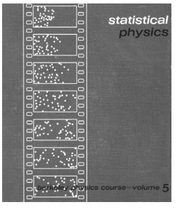
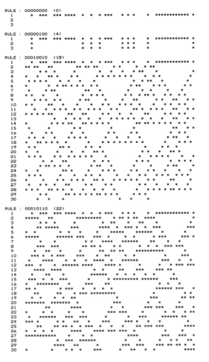

1.4 本书中个人的科学故事
我对于本书中讨论的这些科学问题的兴趣可以精确追溯到1972年夏天，那时我十二岁。我借了一本物理学教材的复印版（见下图），并对其封面的随机过程插画十分好奇。但书上给出的数学解释不太确定，我决定自己在计算机上模拟这个过程。

我当时接触的计算机和现代标准相比，是很原始的一台。结果，我别无选择只能去研发一个书中过程的简化版。开始我怀疑我构造的系统太简单，不能得到我想要的现象。但是大量的编程努力后，我使自己确信这些怀疑都错了。
而事实证明，我看到的是本书我考虑的主要系统——元胞自动机中的其中一种特殊情况。如果不是我想要尽可能真实地模拟，很可能在1974年我就发现了一些在本书中描述的主要现象。
然而，当时我决定把全部的力量投入最基础的科学领域：理论粒子物理。在后来的数年里，确实在粒子物理和宇宙学的一些领域里取得了显著的进展。但是后来我开始怀疑那些我遇到重要基础的问题和这个领域深奥的细节无关。
事实上我意识到，即使是在日常的现象中，都有许多我们无法回答的相关问题。比如说激流中复杂模式的根本起源是什么？雪花的精巧形状如何产生？是什么基本机理使得动植物以这种复杂的方式生长？
（p17）
令我惊讶的是，在这些问题上过去并没有做多少工作。一开始我认为使用一些复杂的数学技术可能取得进展，就像我在理论物理中使用的一样。但很快我明白了我所研究的现象，传统数学的结果，如果不是不可能，将会很难发现。
所以我能做什么？一个在物理工作上的副产品：我在1981年开发的一个大型软件系统，从某种方面上来说是Mathmatica的前身。至少在智力层面来说，工程中最复杂的部分是设计系统基于的符号语言。在开发语言的过程中，我相当清楚我提出的几个原始的操作是如何成功地覆盖大量又复杂的计算任务的。
所以我想也许我能在自然科学做一些类似的事情，也许有我能发现一些适当的原始操作可以捕获复杂的自然现象。当时我的想法还不够明确，但是我相信我暗中想象的那种方法，能够用来建成一些计算机程序，这些程序可以模拟多种多样我感兴趣的自然系统。
这些系统的独立部分已经有了确定的数学模型，但是有两个实际的问题挡在了将其作为模拟的基础上。首先，这些模型通常很复杂，现实计算机的资源很难把足够多的现象中的部分包含进去。其次，即使其中一个得到了现象，几乎不可能说出它到底是潜在模型的真实结果，还是计算机模拟的近似结果。
但我意识到我想要研究的现象中，并不需要使用一些精确的独立模型。其他方面，有证据表明，在许多情况下部分的细节并不重要，比如空气和水的同样复杂的流动模式。带着这个想法，我决定并不从详细的现实模型开始，而是从一些尽可能简单的模型开始——而且能够很容易在计算机上设为程序。
（p18）
一开始，我不知道这是怎么工作的，也不知道我需要多复杂的程序。确实，当我看到各种各样的简单程序时，它们总是产生比我想研究的系统简单得多。
但是在1981年的夏天，我做了一个我认为十分简单的计算机实验，来了解一些特定的程序的行为。我对这个实验并没有抱太大期望，但事实上结果却是惊人和戏剧化的，这使得我逐渐理解了它们，它们让我改变了对科学的看法，最后发展出了本书中所描述的新科学的知识结构。
下图演示了一个我最初实验的典型输出。这张图很原始，但是其包含的精确模式不像我曾看到的任何事物。但随后我确信——我意识到了我看到了一个明显的意外的现象：即使简单的程序也产生了复杂的行为。

但是这种基本的东西怎么可能之前没有被注意到过呢？我查阅了科学文献，和许多人交流，后来发现一个类似我研究的系统，在三十年前被命名为“元胞自动机”。但尽管方法接近，没有人尝试过我做的实验。
尽管如此，我依然怀疑我发现的这个基本现象是某个科学原理的结论。但是尽管我从许多领域如混沌理论、分形几何找到的一些思想帮助解释了一些明确的特性，但似乎没有任何一个完整的现象被研究过。
（p19）
我对元胞自动机的早期发现激起了科学界的大量活动。直到80世纪中期，许多物理学、生物学、计算机科学、数学等领域的应用被发现。确实，我发现的一些现象开始被作为一门叫做复杂系统理论的研究领域基础。
贯穿始终的是，我继续在对基础问题进行研究，直到1985年，我开始意识到我之前看到的东西只是对某个更为戏剧性和基础性的事物的线索。但要理解这个发现是困难的，这需要直觉上的巨大转变。
然而，我可以看见前方非凡的智力机会。我第一个想法是组织一个学术团体来利用。所以我开创了一个研究中心和一个期刊，列出了一系列需要攻克的难题，并努力传递我所定义方向的属性。
尽管在激烈地增长，特别是对于潜在的应用，但对打破传统直觉的方向和直觉方面似乎没有什么成功。随后我意识到，如果能有任何戏剧性的进展，我就是那个不得不去做的人。所以我决定去建立一个最好的工具和基础设施，然后尽可能高效地做我认为应该做的研究。
在最初的80年代，我最大的障碍就是各种相当低层次的工具进行计算机实验的实践困难。但在1986年我意识到我有一些想法，可以建立一个统一的系统来做技术计算。既然没有现存的，我决定自己建立。
然后就产生了Mathmatica。
在五年的时间里，建立的Mathmatica和其周围的公司吸引了我。但是在1991年——我不再是一个学者，而是一个成功公司的CEO——我又能够开始研究本书中的那些问题了。
装备Mathmatica后我开始一系列新的实验。其结果很壮观，在短短几个月里，我对简单程序所做的发现比过去十多年得出的更多。我的早期工作展示了一些意想不到的显著现象。但从新实验里，我开始看到了这些现象的全部力量和普遍性。
（p20）
随着我的方法和直觉的进步，我的发现也越来越多，在几年内我就开始将我对简单程序的探索带到了一个顶点，在这里我积累了大量事实信息，这是长久以来许多科学领域所羡慕的。
在进程早期的时候我就开始构建了几个通用性原则。随着时间推进，这些原则越是被确信，我就越感觉到其强大的通用性。
当我从80年代最开始的时候，我的目标仅仅是理解现象的复杂性。但是直到90年代中期，我构建的整个知识体系，它远比我当初设想的做得更多，并且事实上它提供了一个基础，可以考虑为一种根本性的新科学。
那对我来说是最兴奋的日子。到处都是我第一次探索的新领域，每一个都有其独有特点。但有了我开发的整个框架，我逐渐能够回答许多曾经提出的最明显的问题。
最初我主要关心的新问题并没有处于现有科学的中心，但我逐渐意识到我所构建的新科学应当能够提供一种解决现有领域的一些问题的根本性方法。
因此在大概1994年，我系统地调查了各个主要的传统科学领域。我开始对这些领域的基础问题产生了兴趣。通常我倾向于相信他们大多数传统的智慧，但当我在我新科学的环境下开始研究它们时，我不断发现相当一部分的传统智慧似乎并不正确。
经典的问题有一个核心问题，传统的方法或者直觉都不能成功地解决——这也是这个领域某种程度上所避免的。然而我一次次兴奋地发现在我的新科学的体系下，我开始取得巨大的进展——甚至是一些几个世纪都难以回答的问题。
（p21）
在我建立的框架下，我曾经发现的一些事物最终看起来都变得简单。但要解决它们则要包括大量的科学工作，因为仅仅采取几个技术步骤是不够的。在每个领域里，都有必要去进行有深度和广度的理解，从而能够确定重要的特征——然后基于新科学重新思考。
做这些当然需要在各个不同科学领域中有大量经验。但或许对我来说最重要的是这个进程有些像我在设计Mathmatica时无数次做的事情：从精确的技术开始，然后逐渐发现如何令人震惊的简单东西地去捕捉其基本特点。我重复做这个工作的事实给了我极大信心去尝试科学领域中其他相似的事物。
回想起来，我得出的结论往往很奇怪，而且每个结论都是从未得到过的。但对各个领域科学史的研究，我看到许多案例都是在缺失关键方法或直觉的情况下走入歧途的，而现在我的新科学中，这些关键方法和直觉出现了。
当我第一次在八十年代做出对元胞自动机的发现时，我怀疑我看到了某个重要的开端。但我并不知道它最终会有多重要。确实在过去二十多年里，我做了更多超过我设想的发现。而我花了许多精力构建的新科学，似乎是未来知识发展的重要和关键的方向。